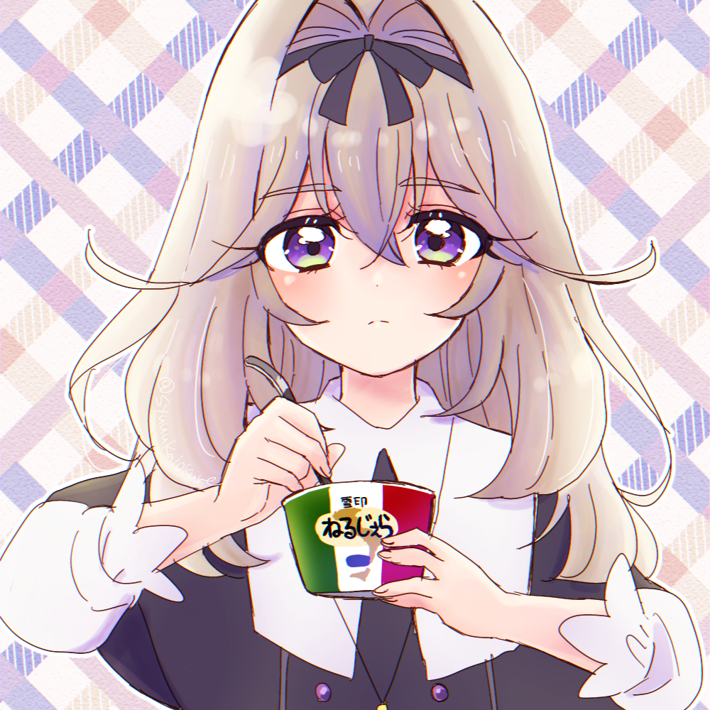

您好！本问卷数据会存入云端，所有人看到的统计结果是一样的。匿名填写，感谢参与！
1=完全不同意，2=不太同意，3=一般，4=比较同意，5=完全同意
1. 当我遇到挫折时，我渴望有人能无条件地接纳和安慰我
2. 我希望有人能无条件地包容我的一切
3. 我觉得外表可爱、看起来年龄小的角色更容易让我产生好感
4. 我觉得“萌”是一种很有吸引力的特质
5. 我更喜欢不需要刻意维护就能持续的陪伴关系
6. 复杂的人际关系让我感到疲惫
7. 我喜欢那些让我觉得可以放心依靠、不会离开我的角色
8. 我希望在关系中能感到安全，不用担心被抛弃
9. 我经常感到孤独
10. 我需要某种形式的情感寄托
11. 我害怕复杂的亲密关系带来的责任和压力
12. 自由对我来说比恋爱更重要